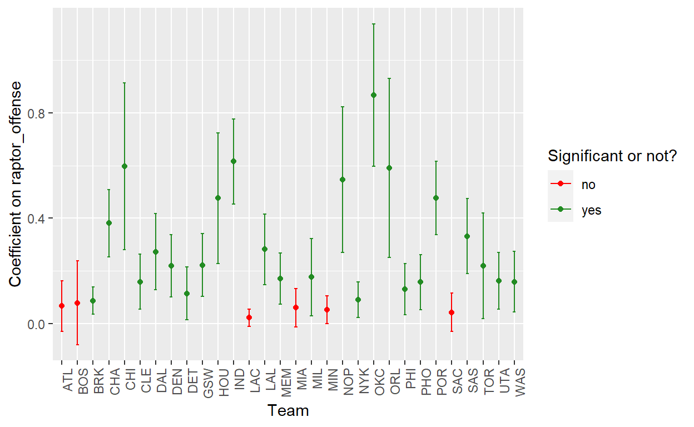

Introduction:
The game of basketball is quickly becoming more complex. From the popularization of the three-point shot to advanced off-ball tactics, there are many aspects of basketball that make it difficult for a single team to dominate the NBA. Yet an age-old and fundamental debate remains: is offensive ability or defensive ability more significant to a player’s worth on a team? I want to analyze whether points above average per 100 possessions added on defense has a statistically significant relationship to player value, as measured by how many more wins a player is worth than a replacement-level player. Then, I will compare it to the relationship between the number of points above average per 100 possessions added on offense and player value. Does high defensive value serve as a legitimate metric to evaluate player value, and could it be more influential than offensive value? Using linear regression and confidence interval analysis, I will utilize statistical data to confirm or reject the central hypothesis: teams with a greater number of points added above average per 100 possessions on defense show a positive significant relationship with the value of a player, as measured by a larger number of wins added than a replacement player. And, under a confidence interval of 95%, there will be more teams that show significance in the regression of defensive value on player value than in the regression of offensive value on player value.
Data
To analyze this research question and hypothesis, I am using a data set that utilizes a sports metric system called RAPTOR (Robust Algorithm (using) Player Tracking (and) On/Off Ratings). RAPTOR is a new plus-minus statistic that measures the number of points a player contributes to his team’s offense and defense per 100 possessions, relative to a league-average player. For context, plus−minus is a sports statistic used to measure a player’s impact and is represented by the difference between their team’s total scoring versus their opponent’s when the player is in the game. Additionally, I am drawing from the RAPTOR data for every player in the latest 2022-2023 season. My first explanatory variable of interest is raptor_defense, which utilizes a combination of plus-minus and box impact data to calculate the points above average for 100 possessions added by a player on defense. For instance, a player with an offensive RAPTOR rating of +2.1 boosts his team’s performance by 2.1 points per 100 offensive possessions while he is on the floor. The second variable of interest is raptor_offense, which is the same as raptor_defense but for offensive points above average for 100 possessions. A player with a defensive RAPTOR of +3.4 would improve his team’s defensive performance by 3.4 points per 100 possessions while he’s on the court. The final variable of interest is war_total. WAR measures a player’s value in all facets of the game by deciphering how many more wins he’s worth than a replacement-level player at his same position. To accomplish this analysis, I will analyze defensive impact value versus offensive impact value on the value of a player (measured by wins greater than a replacement-level player) through two methods. The first will be a regression for raptor_defense and raptor_offense on war_total for all players on all teams – a pooled regression for the dependent variables. The second process will group the process by team and will take the regression for both offensive and defensive point impact for players on each team, which will isolate inter-team impact. In this sense, we can compare offensive and defense impact on player value overall across all players and within specific teams. The following graph represents the war_total value for every player in the NBA, grouped by team.
library(tidyverse)
library(infer)
raptor <- read.csv("latest_RAPTOR_by_team.csv")
raptor_war_plot <- raptor|>
group_by(team)|>
ggplot(mapping = aes(x = team, y = war_total)) +
geom_point(alpha = 0.5) +
theme(axis.text.x = element_text(angle=90, hjust =1)) +
xlab("Team") + ylab("Total Value in Wins Above Replacement Player")
raptor_war_plot
Results:
library(modelsummary)
pooled_total_def <- lm(war_total ~ raptor_defense, data = raptor)
pooled_total_off <- lm(war_total ~ raptor_offense, data = raptor)
var_labels_offense <- c("raptor_offense" = "RAPTOR Offense")
var_labels_defense <- c("raptor_defense" = "RAPTOR Defense")
modelsummary(pooled_total_def, stars = c("*"=0.05,
"**"=0.01,
"***"=0.001),
coef_map = var_labels_defense,
gof_map=c("nobs","r.squared","adj.r.squared"))| (1) | |
|---|---|
| RAPTOR Defense | 0.062*** |
| (0.011) | |
| Num.Obs. | 1652 |
| R2 | 0.020 |
| R2 Adj. | 0.020 |
| * p < 0.05, ** p < 0.01, *** p < 0.001 |
modelsummary(pooled_total_off, stars = c("*"=0.05,
"**"=0.01,
"***"=0.001),
coef_map = var_labels_offense,
gof_map=c("nobs","r.squared","adj.r.squared"))| (1) | |
|---|---|
| RAPTOR Offense | 0.131*** |
| (0.009) | |
| Num.Obs. | 1652 |
| R2 | 0.116 |
| R2 Adj. | 0.115 |
| * p < 0.05, ** p < 0.01, *** p < 0.001 |
Looking at the regression coefficient for raptor_defense on war_total across all teams and all players, we see that, on average, an increase of one defensive point added above average for 100 possessions leads to a 0.062 increase in the value of a player, as measured by the number of wins added above a replacement-level player. The R2 value of 0.02 indicates that 2% percent of the variation in the value of war_total (dependent) is explained by the variation in raptor_defense (independent). The regression coefficient is highly significant, as the p-value of less than 0.001 says that data this extreme would only happen in 0.1% of repeated samples if the null were true. In short, there is a high probability of rejecting the null, which means there is a high probability that there isn’t no effect of defense on the value of a player for all players across all teams. Looking at the regression coefficient for raptor_offense on war_total across all teams and all players, we see that, on average, an increase of one offensive point added above average for 100 possessions leads to a 0.131 increase in the value of a player, as measured by the number of wins added above a replacement-level player. The R2 value of 0.116 indicates that 11.6% percent of the variation in the value of war_total (dependent) is explained by the variation in raptor_offense (independent). The regression coefficient is highly significant, as the p-value of less than 0.001 says that data this extreme would only happen in 0.1% of repeated samples if the null were true. In short, there is a high probability of rejecting the null, which means there is a high probability that there isn’t no effect of offense on the value of a player for all players across all teams.
# Get all unique team names
team_names <- unique(raptor$team)[-1]
# Prepare empty data frame to store regression values for each team
output <- data.frame(matrix(ncol = 7, nrow = length(team_names)))
# Rename columns
names(output) <- c("team", "est.def", "se.def", "p.def",
"est.off", "se.off", "p.off")
# Initiate for loop, loop across all team names
for (i in 1:length(team_names)) {
# Indicate which team we're looking at based on i value
output$team[i] <- team_names[i]
# Subset data down to certain team based on previous step
raptor_subset <- raptor|>
filter(team == team_names[i])
# Conduct regression for defense and offense within team
fit_1_intermediate <- lm(war_total ~ raptor_defense, data = raptor_subset)
fit_2_intermediate <- lm(war_total ~ raptor_offense, data = raptor_subset)
# Store values for each team
output$est.def[i] <- summary(fit_1_intermediate)$coefficients[2,1]
output$se.def[i] <- summary(fit_1_intermediate)$coefficients[2,2]
output$p.def[i] <- summary(fit_1_intermediate)$coefficients[2,4]
output$est.off[i] <- summary(fit_2_intermediate)$coefficients[2,1]
output$se.off[i] <- summary(fit_2_intermediate)$coefficients[2,2]
output$p.off[i] <- summary(fit_2_intermediate)$coefficients[2,4]
}
# Compute upper and lower bounds of CI using se * z-score +/- est
output <- output |>
mutate(
ci.lb.def = est.def - qnorm(0.975)*se.def,
ci.ub.def = est.def + qnorm(0.975)*se.def,
ci.lb.off = est.off - qnorm(0.975)*se.off,
ci.ub.off = est.off + qnorm(0.975)*se.off,
)
# Determine which coefficients are signifcant
output <- output |>
mutate(
significance.def = as.factor(ifelse(p.def < 0.05, "yes", "no")),
significance.off = as.factor(ifelse(p.off < 0.05, "yes", "no"))
)
output |>
knitr::kable(digits = 2)| team | est.def | se.def | p.def | est.off | se.off | p.off | ci.lb.def | ci.ub.def | ci.lb.off | ci.ub.off | significance.def | significance.off |
|---|---|---|---|---|---|---|---|---|---|---|---|---|
| TOR | 0.11 | 0.19 | 0.57 | 0.22 | 0.10 | 0.04 | -0.26 | 0.47 | 0.02 | 0.42 | no | yes |
| MEM | 0.13 | 0.08 | 0.10 | 0.19 | 0.05 | 0.00 | -0.02 | 0.29 | 0.10 | 0.28 | no | yes |
| MIA | 0.03 | 0.05 | 0.55 | 0.10 | 0.04 | 0.01 | -0.07 | 0.13 | 0.02 | 0.17 | no | yes |
| UTA | 0.16 | 0.11 | 0.16 | 0.16 | 0.06 | 0.01 | -0.06 | 0.37 | 0.05 | 0.27 | no | yes |
| MIN | 0.12 | 0.04 | 0.01 | 0.07 | 0.03 | 0.01 | 0.03 | 0.20 | 0.02 | 0.12 | yes | yes |
| MIL | 0.14 | 0.05 | 0.00 | 0.20 | 0.07 | 0.01 | 0.05 | 0.24 | 0.05 | 0.34 | yes | yes |
| CLE | -0.08 | 0.06 | 0.19 | 0.17 | 0.05 | 0.00 | -0.20 | 0.04 | 0.06 | 0.27 | no | yes |
| NOP | 0.41 | 0.19 | 0.04 | 0.55 | 0.14 | 0.00 | 0.04 | 0.78 | 0.27 | 0.82 | yes | yes |
| ORL | 0.27 | 0.08 | 0.00 | 0.59 | 0.17 | 0.00 | 0.11 | 0.43 | 0.25 | 0.93 | yes | yes |
| POR | 0.13 | 0.09 | 0.17 | 0.48 | 0.07 | 0.00 | -0.05 | 0.31 | 0.34 | 0.62 | no | yes |
| NYK | -0.01 | 0.06 | 0.86 | 0.11 | 0.03 | 0.00 | -0.12 | 0.10 | 0.05 | 0.17 | no | yes |
| WAS | 0.11 | 0.08 | 0.19 | 0.16 | 0.06 | 0.01 | -0.05 | 0.28 | 0.04 | 0.27 | no | yes |
| PHO | 0.19 | 0.07 | 0.01 | 0.26 | 0.05 | 0.00 | 0.05 | 0.33 | 0.17 | 0.36 | yes | yes |
| DET | 0.01 | 0.02 | 0.76 | 0.11 | 0.05 | 0.03 | -0.03 | 0.04 | 0.01 | 0.21 | no | yes |
| GSW | 0.11 | 0.08 | 0.15 | 0.27 | 0.06 | 0.00 | -0.04 | 0.26 | 0.15 | 0.38 | no | yes |
| CHA | 0.24 | 0.14 | 0.10 | 0.38 | 0.06 | 0.00 | -0.04 | 0.51 | 0.25 | 0.51 | no | yes |
| LAL | 0.25 | 0.09 | 0.01 | 0.38 | 0.06 | 0.00 | 0.08 | 0.42 | 0.25 | 0.50 | yes | yes |
| SAS | 0.13 | 0.06 | 0.02 | 0.33 | 0.07 | 0.00 | 0.02 | 0.24 | 0.19 | 0.48 | yes | yes |
| SAC | -0.03 | 0.07 | 0.67 | 0.05 | 0.04 | 0.16 | -0.17 | 0.11 | -0.02 | 0.12 | no | no |
| LAC | 0.01 | 0.02 | 0.48 | 0.03 | 0.02 | 0.12 | -0.02 | 0.05 | -0.01 | 0.06 | no | no |
| OKC | 0.30 | 0.19 | 0.12 | 0.87 | 0.14 | 0.00 | -0.07 | 0.67 | 0.60 | 1.14 | no | yes |
| DAL | 0.03 | 0.10 | 0.76 | 0.27 | 0.07 | 0.00 | -0.16 | 0.22 | 0.13 | 0.42 | no | yes |
| CHI | 0.20 | 0.12 | 0.11 | 0.60 | 0.16 | 0.00 | -0.04 | 0.43 | 0.28 | 0.91 | no | yes |
| ATL | 0.03 | 0.06 | 0.54 | 0.08 | 0.05 | 0.12 | -0.07 | 0.14 | -0.02 | 0.17 | no | no |
| IND | 0.21 | 0.16 | 0.19 | 0.62 | 0.08 | 0.00 | -0.10 | 0.53 | 0.45 | 0.78 | no | yes |
| DEN | 0.24 | 0.12 | 0.04 | 0.30 | 0.06 | 0.00 | 0.02 | 0.47 | 0.18 | 0.41 | yes | yes |
| BRK | 0.01 | 0.03 | 0.59 | 0.09 | 0.03 | 0.00 | -0.04 | 0.07 | 0.04 | 0.14 | no | yes |
| BOS | 0.27 | 0.07 | 0.00 | 0.12 | 0.08 | 0.12 | 0.13 | 0.41 | -0.03 | 0.27 | yes | no |
| PHI | 0.11 | 0.05 | 0.03 | 0.15 | 0.05 | 0.00 | 0.01 | 0.21 | 0.05 | 0.24 | yes | yes |
| HOU | 0.37 | 0.12 | 0.01 | 0.48 | 0.13 | 0.00 | 0.13 | 0.62 | 0.23 | 0.72 | yes | yes |
def_plot <- ggplot(aes(x = team, y = est.def), data = output) +
geom_point(aes(color = significance.def)) +
geom_errorbar(aes(ymin = ci.lb.def,
ymax = ci.ub.def,
width = 0.2, color = significance.def)) +
theme(axis.text.x = element_text(angle=90, hjust =1)) +
xlab("Team") + ylab("Coefficient on raptor_defense") +
scale_color_manual(name = "Significant or not?",
labels = c("no", "yes"),
values = c("red", "forestgreen"))
def_plotoff_plot <- ggplot(aes(x = team, y = est.off), data = output) +
geom_point(aes(color = significance.off)) +
geom_errorbar(aes(ymin = ci.lb.off,
ymax = ci.ub.off,
width = 0.2, color = significance.off)) +
theme(axis.text.x = element_text(angle=90, hjust =1)) +
xlab("Team") + ylab("Coefficient on raptor_offense") +
scale_color_manual(name = "Significant or not?",
labels = c("no", "yes"),
values = c("red", "forestgreen"))
off_plot
The second regression analysis groups the data to players on each individual team and performs the same regression between offensive and defensive impact value on player value. To accomplish this, I created an empty data frame to store the regression coefficient, standard error, and p-value. To calculate these values, I set up a for-loop that took the regression for both variables of interest (offensive and defensive impact value) on player value, as measured by number of wins greater than a replacement player, and stored all relevant values into the knitted table. I algebraically found the upper and lower bounds for a 95% confidence interval using the formula: bound = sample mean +/- 1.96 * se. Finally, to visualize the statistical significance across all teams, I created two separate plots for the regression coefficients and labeled the upper and lower bounds of the confidence interval. The plots were color-coded in green and red based on which teams reported statistically significant effects under a p-value alpha of 0.05. Even though teams reported positive regression coefficients associated with the regressions of raptor_defense and raptor_offense on war_total, they did not see statsitical significance under a 95% confidence interval, which means we cannot reject the null hypothesis. This makes it harder to draw a general relationship about offense or defense (especially defense), as there is the possibility that the results could have been by chance. Regarding defense, under a p-alpha of 0.05, out of the 30 NBA teams, only 11 teams report statistical significance. That means, in a confidence interval of 95%, we can only safely reject the null hypothesis that there is no effect of defensive points added on average over 100 possessions on a player’s value for 11 teams. Conversely, regarding offense, using the same metrics, we find that 26 teams out of 30 teams reported statistical significance. There are more teams that show statistical significance between offensive impact value on player value than teams that show statistical significance between defensive impact value on player value.
Conclusion:
In the first regression analysis, a pooled regression of all players on all teams yielded a positive and statistically significant relationship between the dependent (war_total) on the independents (raptor_defense and raptor_offense), as deemed by regression analysis with a 99% confidence interval. However, when we turn to the regression analysis within teams, for defense, we see that most teams do not see significance, meaning that we cannot reject the null that there is no effect of defensive value on player value. This means that the hypothesis cannot be deemed correct because the pooled regression results do not fully match the team results. It may be that for all players across all teams, good defense may increase value, but when we subset that analysis to specific teams, that relationship doesn’t hold. This is also corroborated with that for the regression on the full data set, the R^2 value for defense is low at 0.02, showing that the in-sample fit isn’t very good. In any case, it seems clear that offensive imapct still maintains a more prevalent and impactful part of NBA players’ value than defensive impact. As in any data analysis project, there are confounding variables that cloud interpretations of establishing causality between the dependents and independents. First, the experiment seeks to isolate the impact of offense and defense on player value, but this does not exclude the fact that there are certain “star” players on a particular team that can facilitate value onto other players. For instance, multi-faceted players like Nikola Jokic or Stephen Curry can facilitate plays on either end of the floor (offense and defense) and conflate the entire team’s ratings. In doing so, if a player is on the floor at the same time, then they’re going to record more impressive scoring statistics, thereby altering the data. Another confounding variable is the fact that the data set included values for both the regular season (82 games in total) plus certain teams that made the playoffs. Since the playoffs are high-stress, high reward games, offensive and defensive raptor values may be greater than baseline statistics for certain players who rise to the challenge. Finally, there are factors such as strength of coaching and player health that affect how intensely a player can contribute to the offensive and defensive impact of a team. With more time and money, the analysis could take into account player efficiency by controlling more for factors such as pass completion percentages, number of assists, off-ball movement like screens, and general basketball IQ. All of these are technical aspects of the game of basketball that aid in determining a player’s value in wins above a replacement player but are not counted or represented in the offensive and defensive points scored.